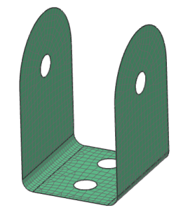
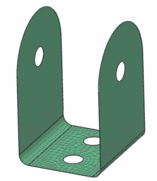

Experiment with mesh size and method
The 2D Mesh dialog box is still open from the previous step.
Change the element size and watch how the elements become much more uniform.
-
 the mesh
the mesh
-
Element Size
6
-
Apply
to remesh the part

Change the Meshing Method to see how it affects the elements.
-
the mesh
-
Meshing Method
Paver

-
OK
-

The paver meshing method generates a mesh that is more structured around the holes and the boundary of the model.